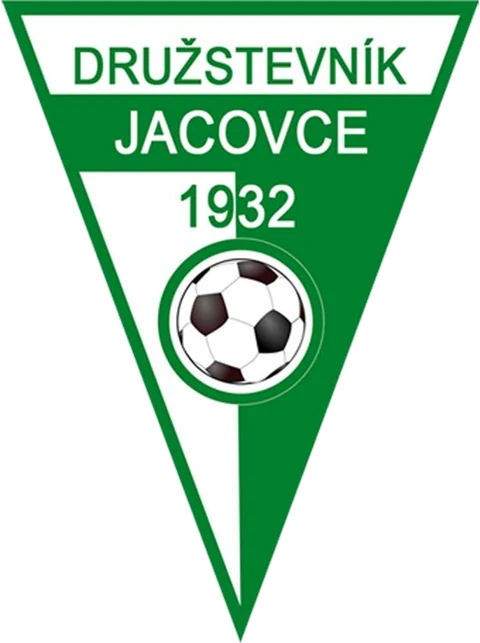

Posledný zápasA-mužstvo
 TJ Družstevník Jacovcedomáci
TJ Družstevník JacovcedomáciVýsledok 5:1
 Slovan Šimonovany-Partizánskehostia
Slovan Šimonovany-PartizánskehostiaVýhrapolčas 3:0
Návrh webu · nie je to oficiálna stránka klubu
Futbal od 10. júla 1932 · ročník 2026/27
V minulom ročníku skončilo áčko druhé vo VI. lige Severovýchod, na jar s 14 výhrami a jedinou prehrou. Teraz hrá VI. ligu Severovýchod a po jeseni je na 6. mieste zo 16. Najmenší, Jacovské bociany, sú majstrami okresu.

6 rokov do storočnice
Zimná prestávka. Jar sa začína v sobotu 6. marca 2027, áčko v ten deň hrá vonku na ihrisku TJ Slovan Krušovce.
VI. liga Severovýchod
Posledný zápasA-mužstvo
TJ Družstevník JacovcedomáciVýsledok 5:1
Slovan Šimonovany-PartizánskehostiaVýhrapolčas 3:0
Os a gólové váhy
6.
miesto zo 16 · 24 bodov · skóre 44:22
| # | Tím | Z | V | R | P | Skóre | B |
|---|---|---|---|---|---|---|---|
| 4 | 15 | 7 | 4 | 4 | 30:18 | 25 | |
| 5 | 15 | 7 | 3 | 5 | 32:24 | 24 | |
| 6 | 15 | 7 | 3 | 5 | 44:22 | 24 | |
| 7 | 15 | 7 | 2 | 6 | 17:18 | 23 | |
| 8 | 15 | 7 | 0 | 8 | 19:26 | 21 |
1932 – 2032
Každý rok jedna tyč zeleno-bieleho zábradlia, ako okolo ihriska. Vyššie tyče sú míľniky, do storočnice zostáva 6 rokov.
1932
10. júla vzniká Jacovský športový klub.
1948
Do užívania ide terajšie ihrisko.
1956
Zisk Slovenského pohára po linke Sokola a 2. miesto v Československu. V tom istom roku Jacovce vyhrali I. B triedu Nitrianskeho kraja (18 výhier, 1 remíza, 2 prehry, 63:21) a postúpili do I. A triedy.
1960
Klub dostáva dnešné meno TJ Družstevník Jacovce.
1972
K 40. výročiu nová tribúna a kolkáreň.
2007
Zatiaľ posledný titul majstra okresu Topoľčany (2006/07); predtým 1953, 1955, 1979/80 a 1985/86.
2022
90. výročie oslávili 2. júla exhibičným zápasom proti mužstvu Československý lev.
2026
Áčko končí ročník 2025/26 druhé vo VI. lige Severovýchod, prípravka U9 sa stáva majstrom okresu.
2032
100 rokov organizovaného športu v Jacovciach.
Zdroj: Jacovský hlásnik 1/2022, 2/2022 a 1/2026, Sportnet.
VI. liga Severovýchod
Po jeseni bolo áčko ôsme a samo priznalo, že to nezodpovedá jeho možnostiam. Na jar prišlo 14 víťazstiev a jediná prehra, s úctyhodnou sériou desiatich víťazných zápasov v rade. Konečné 2. miesto vo VI. lige Severovýchod tréner berie ako dôkaz, že mužstvo má kvalitu.
JACOVCE, do toho!
Zdroj: Jacovský hlásnik 1/2026, konečná tabuľka zo Sportnetu.
64bodov
82:38skóre
14výhier na jar
10výhier v rade
Prípravka U9, majster okresu
Prípravku U9 volajú Jacovské bociany. V ročníku 2025/26 vyhrala zimný halový turnaj ObFZ Topoľčany a vo finále o majstra okresu v Práznovciach zdolala Ludanice na pokutové kopy 3:2. Klub zorganizoval aj Bocian Cup U9 k 50. výročiu titulu majstrov Európy 1976, deťom prišli dodať chuť Ladislav Jurkemik a Dušan Herda.
Zdroj: Jacovský hlásnik 1/2026.
Obec pri Topoľčanoch
1224
Prvú známu písomnú zmienku o Jacovciach z roku 1224 uvádza historik prof. Lukačka. V roku 2024 si obec pripomenula 800 rokov.
Tri obce
Dnešné Jacovce vznikli v 19. storočí spojením troch pôvodne samostatných obcí.
Kostol
Kostol Navštívenia Panny Márie bol pôvodne gotický, asi zo 14. storočia, prestavaný v roku 1680 a v 18. storočí.
Remeslá
V sprievode k 800. výročiu sa predstavili pekári, mlynári a páleníci, výrazné remeslá v obci.
Zdroj: Jacovský hlásnik 1/2024 a 2/2024, e-obce.sk.
Ihrisko od roku 1948
Najbližšie doma
Najbližší zápasA-mužstvo
Výkop o 14:30